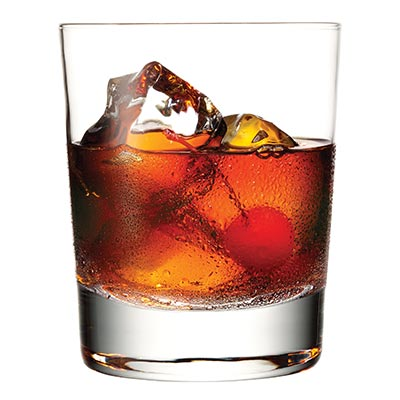

Weather to Drink?
Cheers!
Arlington, VA 22204
:
34°F and Snowing.
It's cold!
You should have a...
Manhattan

Ingredients
2 ounces rye whisky
1 ounce Italian vermouth
2 dashes Angostura bitters
Maraschino cherry for garnish
Directions
Pour the ingredients into a mixing glass with ice cubes.
Stir well.
Strain into a chilled cocktail glass.
Garnish with the cherry.